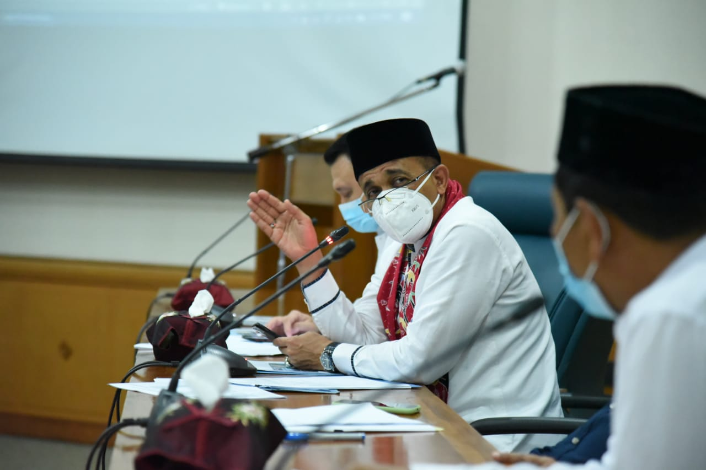
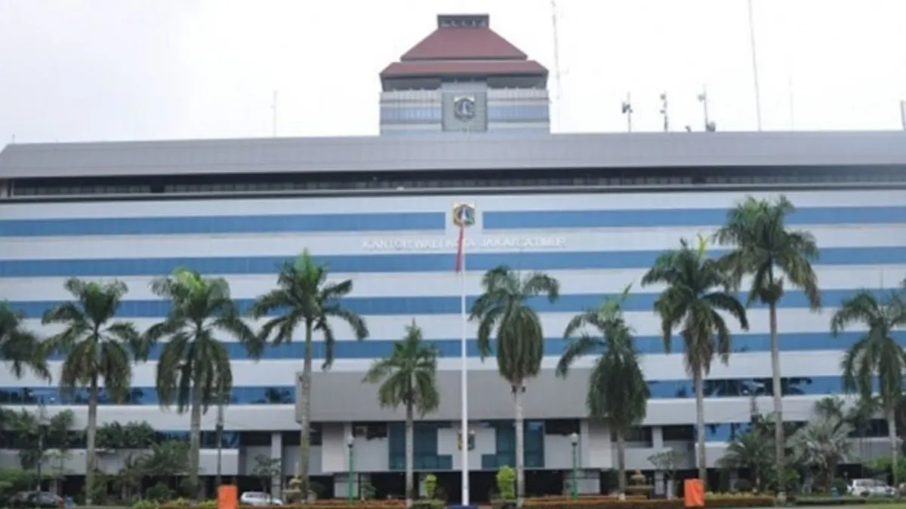
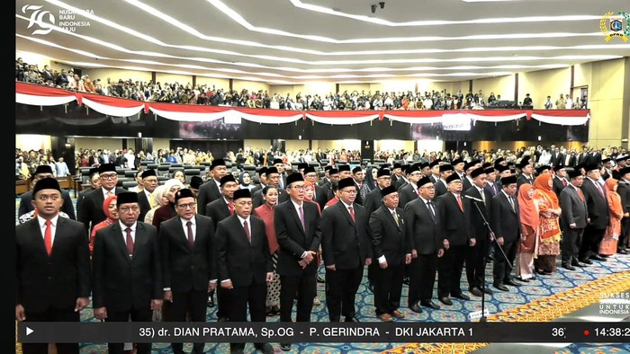

Tangani Banjir, Pemkot Jakarta Timur Gencarkan Pembuatan Resapan Air.
Pemerintah Kota Administrasi Jakarta Timur menggelar Rapat Koordinasi Penanganan dan Pengendalian Banjir bersama SKPD (Satuan Kerja Perangkat Daerah)/UKPD (Unit Kerja Perangkat Daerah) di wilayah Jakarta Timur, Jumat (28/5/2021). Dalam rapat yang digelar di Ruang Pola Lantai 2.
Baca Selengkapnya

Jelang Pemilihan Dewan Kota Jaktim Masa Bakti 2024- 2029 Prediksi Para Ketua RT Dan Ketua RW Penggilingan.
Sehubungan dengan akan segera berakhirnya masa bakti Anggota Dewan Kota Provinsi DKI Jakarta Masa Bakti 2019 – 2024 pada Bulan Juli 2024, maka para lurah, Walikota dan Bupati melaksanakan pemilihan calon anggota Dewan Kota...
Baca Selengkapnya

106 Anggota DPRD DKI Jakarta 2024-2029 Resmi Dilantik.
Sebanyak 106 anggota DPRD DKI Jakarta yang terpilih melalui hasil Pemilu 2024 resmi dilantik. Para Dewan yang dilantik hari ini akan bertugas untuk periode 2024-2029 mendatang. Pantauan detikcom di lokasi, Senin (26/8/2024), Rapat Paripurna Pengucapan Sumpah/Janji Anggota DPRD DKI Jakarta...
Baca Selengkapnya